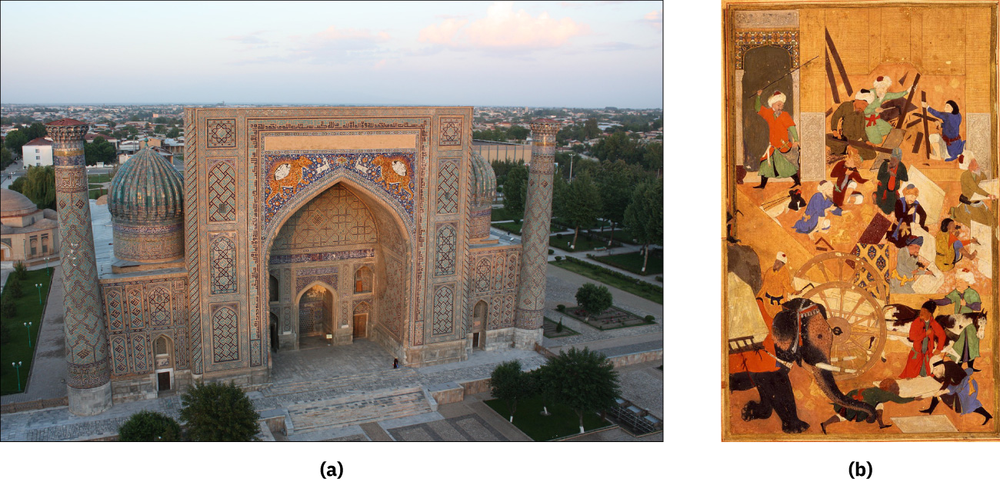

Cities · Asia
사마르칸트 — 푸른 광장에 장인과 학자가 모이다
아름다운 건물을 보는 일과 그 뒤의 사람을 기억하는 일

푸른색과 흙빛이 섞인 커다란 입구, 높게 솟은 탑, 장식으로 채운 벽면. 사마르칸트의 레기스탄을 보면 건물이 넓은 광장을 향해 무대처럼 서 있다는 느낌이 든다. 우즈베키스탄의 이 도시는 사진 한 장만으로도 여행하고 싶은 마음을 일으킨다.
그러나 아름다운 장소가 저절로 생기는 것은 아니다. 사람이 모이고 물자가 들어오며, 누군가 그 일을 후원하고 다른 누군가는 손으로 만들어야 한다. 사마르칸트의 이야기는 멋진 외관 뒤에서 교역과 권력, 배움이 만난 과정으로 이어진다.
1. 왕의 수도가 되기 전에도 길이 있었다
사마르칸트는 중앙아시아의 중요한 오아시스 도시였다. 부하라와 함께 소그드 상인들의 활동과 연결되었으며, 동서 교역을 이어 주는 거점 가운데 하나였다. 실크로드는 한 사람이 처음부터 끝까지 걷는 하나의 도로보다 여러 지역을 잇는 길의 망이었다.
소그드인들은 서쪽과 동쪽의 여러 사람과 거래했고 중국의 주요 도시들에도 교역 공동체를 두었다. 물건뿐 아니라 언어와 종교, 생활의 방식도 이동했다. 사마르칸트를 특정 정복자가 처음 만든 빈 무대처럼 보면 그보다 오래 쌓인 도시의 역할을 놓친다.
2. 티무르는 왜 장인을 수도로 보냈을까
14세기에 세력을 넓힌 티무르는 사마르칸트를 자신의 수도로 삼았다. 정복한 지역에서 부와 유용한 기술을 모았고, 건축가와 예술가, 장인들을 수도로 보냈다. 도시는 큰 건설 작업이 이어지는 장소가 되었다.
장인이 많아졌다는 결과만으로 이를 자유로운 예술가들의 여행으로 그려서는 안 된다. 교재는 정복과 강제적인 이동이 이 과정에 있었다고 설명한다. 건물의 아름다움이 그 배경의 폭력을 없애 주지는 않는다. 도시를 칭찬하는 일과 그곳으로 오게 된 사람들의 조건을 묻는 일은 함께 할 수 있다.
3. 광장은 비어 있는 땅 이상의 공간
레기스탄은 사마르칸트의 공공 집회와 배움이 이루어진 중요한 광장이었다. 광장을 향해 선 마드라사들은 종교와 학문의 교육 공간이다. 커다란 빈 공간과 그 둘레의 건물을 함께 보아야 장소의 성격이 드러난다.
건물 하나의 정면만 보면 장식의 아름다움에 집중하게 된다. 반대로 광장에서 어느 방향을 보아도 중요한 입구가 시선에 들어오는 배치를 생각하면 도시의 중심을 만드는 방식도 보인다. 장식과 공간의 관계는 서로 다른 감상이 아니라 같은 장소를 보는 두 거리다.
4. 사진에 보이는 모든 것이 같은 때 만들어졌을까
함께 실은 도판의 왼쪽은 레기스탄의 셰르도르 마드라사 사진이다. 오른쪽은 티무르의 원정을 다룬 《승전기》에 실린 사마르칸트 대모스크 건설 장면이다. 하나는 남아 있는 건물의 사진이고 다른 하나는 역사적 회화다.
둘을 나란히 놓았다고 같은 건물의 완공 전과 후가 되는 것은 아니다. 사진의 마드라사와 회화 속 대모스크, 뒤에서 소개할 천문대도 서로 다른 장소다. 이 구분을 먼저 해 두면 여러 시대의 건축을 한 사람이 한 번에 만든 도시로 뭉뚱그리지 않게 된다.
5. 건축 현장의 작은 사람들
오른쪽 그림에는 일을 하는 여러 인물과 재료를 옮기는 장면이 보인다. 큰 건물을 감상하다가 작업하는 사람에게 시선을 옮기면 도시 건설이 손과 시간의 문제였다는 점이 가까워진다. 왕의 이름으로 불리는 건물도 여러 사람의 능력이 있어야 만들어진다.
다만 이 그림은 공사 현장을 사진처럼 그대로 옮긴 기록은 아니다. 승리를 기념하고 통치자의 위업을 표현하는 책에 담긴 장면이라는 맥락이 있다. 그 목적을 기억하면서도 그림이 작업을 어떤 모습으로 보여 주려 했는지는 관찰할 수 있다.
6. 왕조의 다음 세대는 별을 바라보았다
티무르의 손자 울루그베크는 사마르칸트에 마드라사와 천문대를 세우고 수학자와 천문학자를 초청했다. 교재는 이 도시가 15세기에 중요한 학문의 중심이 되었다고 설명한다. 권력을 과시하는 건축만이 아니라 배움을 후원하는 공간도 생겨난 것이다.
천문대는 별을 보기 좋은 경치만으로 완성되지 않는다. 관측을 할 사람과 지식을 이어 갈 환경이 있어야 한다. 여기서는 정밀한 관측 기기의 구조나 개별 수치를 다루기보다, 통치자의 후원과 학자의 활동이 도시 안에서 어떻게 만났는지 보아도 좋다.
7. 교역의 중심과 학문의 중심은 어떻게 만날까
먼 곳에서 사람이 들어오는 도시는 다른 언어와 기술을 접할 기회가 있다. 그렇다고 교역이 활발한 곳이 반드시 학문의 도시가 되는 것은 아니다. 일할 장소와 후원, 배움을 지속할 관계가 함께 필요하다.
사마르칸트에서는 오래된 교역 거점의 성격 위에 정복 왕조의 수도라는 역할과 학문 후원이 겹쳤다. 각각의 시기를 같은 장면으로 섞기보다 차례로 보아야 도시의 변화가 보인다. 여러 기능이 늘 똑같은 비율로 유지되었다고 생각할 필요는 없다.
8. 푸른 벽 앞에서 한 번 더 돌아보기
사진 속의 장식은 여전히 아름답다. 역사적 배경을 안다고 그 아름다움을 포기할 이유는 없다. 오히려 건물을 만든 기술과 그 기술을 지닌 사람들의 이동이 구체적으로 느껴져 감상의 내용이 많아진다.
사마르칸트를 기억할 때 푸른 정면 옆에 광장과 작업하는 손, 별을 연구하던 사람의 자리도 남겨 보자. 도시는 한 영웅의 성취만으로 설명되지 않는다. 사진에 크게 보이는 이름난 건물과 작게 보이거나 사라진 사람의 시간을 함께 읽을 때 그 장소의 깊이가 생긴다.
이야기의 바탕이 된 자료
- OpenStax World History — 오스만·티무르와 도시의 변화 ↗확인일 2026-10-30
1453년 정복·메흐메트 2세의 도시 재건과 아야 소피아의 모스크 전환 · 티무르의 사마르칸트 수도 건설·정복 지역 장인의 강제 이동 · 울루그베크의 마드라사·천문대와 학자 초청·레기스탄 도판의 사진과 회화 구분
- OpenStax World History — 소그드인과 중앙아시아 도시 ↗확인일 2026-10-30
사마르칸트와 부하라의 오아시스 교역·소그드 상인과 동서 교류 · 중국 도시에도 존재한 교역 공동체와 언어·종교의 이동; 특정 수도 지정 연대는 단정하지 않음